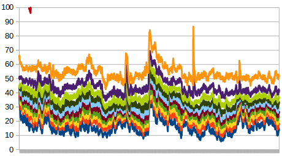
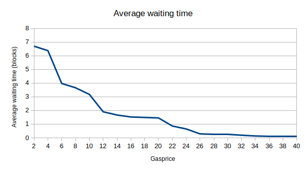
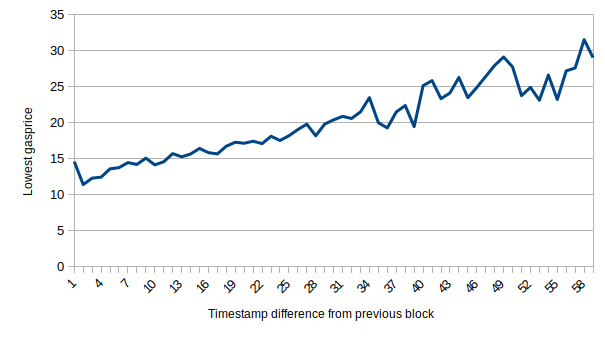

A Quick Gasprice Market Analysis
2017 Dec 14
See all posts
A Quick Gasprice Market Analysis
Here is a file that contains data, extracted from geth, about transaction fees in every block between 4710000 and 4730000. For each block, it contains an object of the form:
{
"block":4710000,
"coinbase":"0x829bd824b016326a401d083b33d092293333a830",
"deciles":[40,40.1,44.100030001,44.100030001,44.100030001,44.100030001,44.100030001,44.100030001,50,66.150044,100]
,"free":10248,
"timedelta":8
}
The "deciles" variable contains 11 values, where the lowest is the lowest gasprice in each block, the next is the gasprice that only 10% of other transaction gasprices are lower than, and so forth; the last is the highest gasprice in each block. This gives us a convenient summary of the distribution of transaction fees that each block contains. We can use this data to perform some interesting analyses.
First, a chart of the deciles, taking 50-block moving averages to smooth it out:

What we see is a gasprice market that seems to actually stay reasonably stable over the course of more than three days. There are a few occasional spikes, most notably the one around block 4720000, but otherwise the deciles all stay within the same band all the way through. The only exception is the highest gasprice transaction (that red squiggle at the top left), which fluctuates wildly because it can be pushed upward by a single very-high-gasprice transaction.
We can try to interpret the data in another way: by calculating, for each gasprice level, the average number of blocks that you need to wait until you see a block where the lowest gasprice included is lower than that gasprice. Assuming that miners are rational and all have the same view (implying that if the lowest gasprice in a block is X, then that means there are no more transactions with gasprices above X waiting to be included), this might be a good proxy for the average amount of time that a transaction sender needs to wait to get included if they use that gasprice. The stats are:

There is clear clustering going on at the 4, 10 and 20 levels; it seems to be an underexploited strategy to send transactions with fees slightly above these levels, getting in before the crowd of transactions right at the level but only paying a little more.
However, there is quite a bit of evidence that miners do not have the same view; that is, some miners see a very different set of transactions from other miners. First of all, we can filter blocks by miner address, and check what the deciles of each miner are. Here is the output of this data, splitting by 2000-block ranges so we can spot behavior that is consistent across the entire period, and filtering out miners that mine less than 10 blocks in any period, as well as filtering out blocks with more 21000 free gas (high levels of free gas may signify an abnormally high minimum gas price policy, like for example 0x6a7a43be33ba930fe58f34e07d0ad6ba7adb9b1f at ~40 gwei and 0xb75d1e62b10e4ba91315c4aa3facc536f8a922f5 at ~10 gwei). We get:
0x829bd824b016326a401d083b33d092293333a830 [30, 28, 27, 21, 28, 34, 23, 24, 32, 32]
0xea674fdde714fd979de3edf0f56aa9716b898ec8 [17, 11, 10, 15, 17, 23, 17, 13, 16, 17]
0x5a0b54d5dc17e0aadc383d2db43b0a0d3e029c4c [31, 17, 20, 18, 16, 27, 21, 15, 21, 21]
0x52bc44d5378309ee2abf1539bf71de1b7d7be3b5 [20, 16, 19, 14, 17, 18, 17, 14, 15, 15]
0xb2930b35844a230f00e51431acae96fe543a0347 [21, 17, 19, 17, 17, 25, 17, 16, 19, 19]
0x180ba8f73897c0cb26d76265fc7868cfd936e617 [13, 13, 15, 18, 12, 26, 16, 13, 20, 20]
0xf3b9d2c81f2b24b0fa0acaaa865b7d9ced5fc2fb [26, 25, 23, 21, 22, 28, 25, 24, 26, 25]
0x4bb96091ee9d802ed039c4d1a5f6216f90f81b01 [17, 21, 17, 14, 21, 32, 14, 14, 19, 23]
0x2a65aca4d5fc5b5c859090a6c34d164135398226 [26, 24, 20, 16, 22, 33, 20, 18, 24, 24]
The first miner is consistently higher than the others; the last is also higher than average, and the second is consistently among the lowest.
Another thing we can look at is timestamp differences - the difference between a block's timestamp and its parent. There is a clear correlation between timestamp difference and lowest gasprice:

This makes a lot of sense, as a block that comes right after another block should be cleaning up only the transactions that are too low in gasprice for the parent block to have included, and a block that comes a long time after its predecessor would have many more not-yet-included transactions to choose from. The differences are large, suggesting that a single block is enough to bite off a very substantial chunk of the unconfirmed transaction pool, adding to the evidence that most transactions are included quite quickly.
However, if we look at the data in more detail, we see very many instances of blocks with low timestamp differences that contain many transactions with higher gasprices than their parents. Sometimes we do see blocks that actually look like they clean up what their parents could not, like this:
{"block":4710093,"coinbase":"0x5a0b54d5dc17e0aadc383d2db43b0a0d3e029c4c","deciles":[25,40,40,40,40,40,40,43,50,64.100030001,120],"free":6030,"timedelta":8},
{"block":4710094,"coinbase":"0xea674fdde714fd979de3edf0f56aa9716b898ec8","deciles":[4,16,20,20,21,21,22,29,30,40,59],"free":963366,"timedelta":2},
But sometimes we see this:
{"block":4710372,"coinbase":"0x52bc44d5378309ee2abf1539bf71de1b7d7be3b5","deciles":[1,30,35,40,40,40,40,40,40,55,100],"free":13320,"timedelta":7},
{"block":4710373,"coinbase":"0x52bc44d5378309ee2abf1539bf71de1b7d7be3b5","deciles":[1,32,32,40,40,56,56,56,56,70,80],"free":1672720,"timedelta":2}
And sometimes we see miners suddenly including many 1-gwei transactions:
{"block":4710379,"coinbase":"0x5a0b54d5dc17e0aadc383d2db43b0a0d3e029c4c","deciles":[21,25,31,40,40,40,40,40,40,50,80],"free":4979,"timedelta":13},
{"block":4710380,"coinbase":"0x52bc44d5378309ee2abf1539bf71de1b7d7be3b5","deciles":[1,1,1,1,1,1,40,45,55,61.10006,2067.909560115],"free":16730,"timedelta":35}
This strongly suggests that a miner including transactions with gasprice X should NOT be taken as evidence that there are not still many transactions with gasprice higher than X left to process. This is likely because of imperfections in network propagation.
In general, however, what we see seems to be a rather well-functioning fee market, though there is still room to improve in fee estimation and, most importantly of all, continuing to work hard to improve base-chain scalability so that more transactions can get included in the first place.
A Quick Gasprice Market Analysis
2017 Dec 14 See all postsHere is a file that contains data, extracted from geth, about transaction fees in every block between 4710000 and 4730000. For each block, it contains an object of the form:
The "deciles" variable contains 11 values, where the lowest is the lowest gasprice in each block, the next is the gasprice that only 10% of other transaction gasprices are lower than, and so forth; the last is the highest gasprice in each block. This gives us a convenient summary of the distribution of transaction fees that each block contains. We can use this data to perform some interesting analyses.
First, a chart of the deciles, taking 50-block moving averages to smooth it out:
What we see is a gasprice market that seems to actually stay reasonably stable over the course of more than three days. There are a few occasional spikes, most notably the one around block 4720000, but otherwise the deciles all stay within the same band all the way through. The only exception is the highest gasprice transaction (that red squiggle at the top left), which fluctuates wildly because it can be pushed upward by a single very-high-gasprice transaction.
We can try to interpret the data in another way: by calculating, for each gasprice level, the average number of blocks that you need to wait until you see a block where the lowest gasprice included is lower than that gasprice. Assuming that miners are rational and all have the same view (implying that if the lowest gasprice in a block is X, then that means there are no more transactions with gasprices above X waiting to be included), this might be a good proxy for the average amount of time that a transaction sender needs to wait to get included if they use that gasprice. The stats are:
There is clear clustering going on at the 4, 10 and 20 levels; it seems to be an underexploited strategy to send transactions with fees slightly above these levels, getting in before the crowd of transactions right at the level but only paying a little more.
However, there is quite a bit of evidence that miners do not have the same view; that is, some miners see a very different set of transactions from other miners. First of all, we can filter blocks by miner address, and check what the deciles of each miner are. Here is the output of this data, splitting by 2000-block ranges so we can spot behavior that is consistent across the entire period, and filtering out miners that mine less than 10 blocks in any period, as well as filtering out blocks with more 21000 free gas (high levels of free gas may signify an abnormally high minimum gas price policy, like for example 0x6a7a43be33ba930fe58f34e07d0ad6ba7adb9b1f at ~40 gwei and 0xb75d1e62b10e4ba91315c4aa3facc536f8a922f5 at ~10 gwei). We get:
The first miner is consistently higher than the others; the last is also higher than average, and the second is consistently among the lowest.
Another thing we can look at is timestamp differences - the difference between a block's timestamp and its parent. There is a clear correlation between timestamp difference and lowest gasprice:
This makes a lot of sense, as a block that comes right after another block should be cleaning up only the transactions that are too low in gasprice for the parent block to have included, and a block that comes a long time after its predecessor would have many more not-yet-included transactions to choose from. The differences are large, suggesting that a single block is enough to bite off a very substantial chunk of the unconfirmed transaction pool, adding to the evidence that most transactions are included quite quickly.
However, if we look at the data in more detail, we see very many instances of blocks with low timestamp differences that contain many transactions with higher gasprices than their parents. Sometimes we do see blocks that actually look like they clean up what their parents could not, like this:
But sometimes we see this:
And sometimes we see miners suddenly including many 1-gwei transactions:
This strongly suggests that a miner including transactions with gasprice X should NOT be taken as evidence that there are not still many transactions with gasprice higher than X left to process. This is likely because of imperfections in network propagation.
In general, however, what we see seems to be a rather well-functioning fee market, though there is still room to improve in fee estimation and, most importantly of all, continuing to work hard to improve base-chain scalability so that more transactions can get included in the first place.